ABOUT ME
My name is Abdelhakim Amer. I am a researcher in learning-based optimal control for robotics.
I am currently a postdoctoral researcher at Aarhus University, where I also completed my industrial PhD with EIVA A/S. My research combines stochastic learning techniques such as Gaussian processes and physics-informed neural networks with model predictive control to improve the performance and safety of autonomous underwater vehicles. I have also been a visiting scholar with the Underwater Robotics group at the German Research Center for Artificial Intelligence (DFKI) and the Automatic Control group at the University of Paderborn.
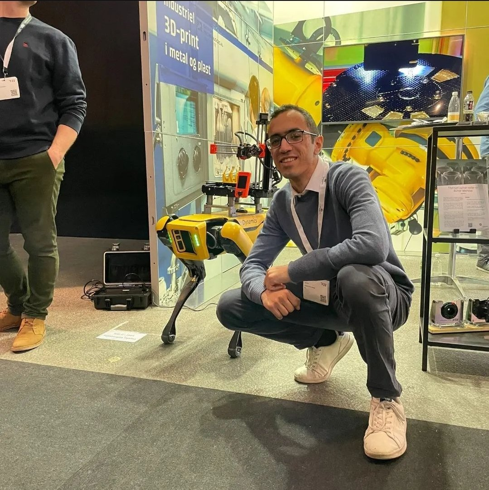
Education
- Bachelor in Mechanical Engineering (High Honors) — The American University in Cairo (2013–2018)
- MSc. in Mechanical Engineering — Delft University of Technology (2018–2021)
- PhD in Robotics & A.I — Aarhus University / EIVA A/S (2022–2025)
- Postdoctoral Researcher — Aarhus University (2025–Now)
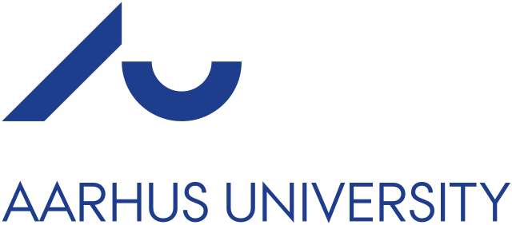
AarhusVisiting Scholar
- Underwater Robotics Research Group — German Research Center for Artificial Intelligence (DFKI), Germany (2025, 3 months)
- Automatic Control Research Group — University of Paderborn, Germany (2023, 1 month)
 DFKI
DFKI
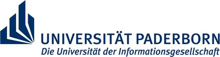
PaderbornAcademics
Research Areas
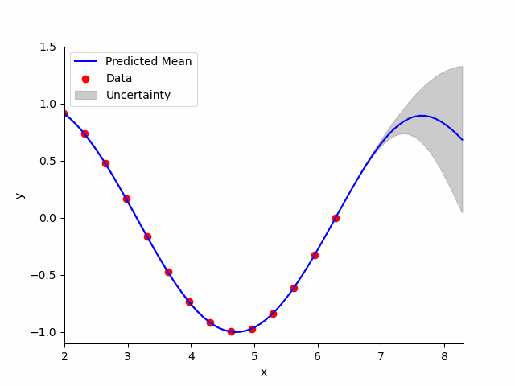
Bayesian Machine Learning
Gaussian process regression for system identification and model learning.
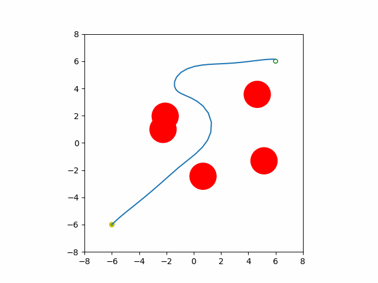
Optimal Control
Model predictive control (MPC) for safe and optimal trajectory generation.
Graduate teaching assistant

Bayesian Machine Learning
Gaussian process regression for system identification and model learning.

Optimal Control
Model predictive control (MPC) for safe and optimal trajectory generation.
MY PROJECTS
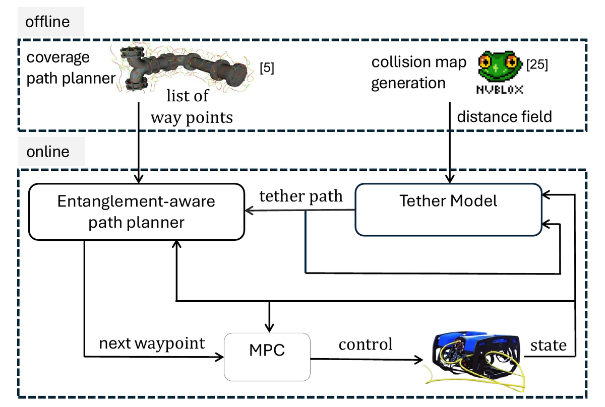
REACT
Real-time entanglement-aware coverage path planning for tethered underwater vehicles. A geometry-based tether model on an SDF map enables online replanning that prevents tether entanglement around 3D structures, completing inspection missions ~20% faster than baseline planners while removing the need for post-mission disentanglement.
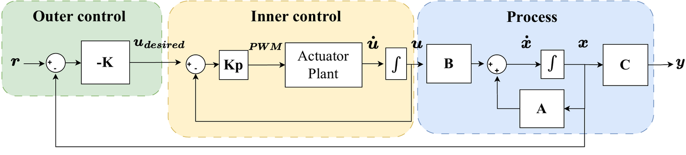
SeaVis
Modelling and gain-scheduled LQR control of a remotely operated towed vehicle for seabed visualization and mapping. Includes a full simulation-to-real pipeline with HoloOcean, system identification of the towed body, and tracking of arbitrary seabed profiles within ±5°.
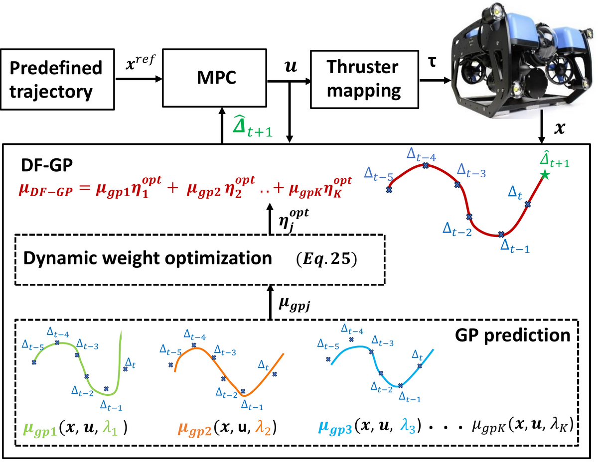
Learning-based MPC with Dynamic Forgetting GP
A learning-based model predictive controller for autonomous underwater vehicles that combines sparse Gaussian processes with an adaptive forgetting factor, so the disturbance model dynamically discards stale data when the environment changes. Validated on a BlueROV in simulation and experiments.
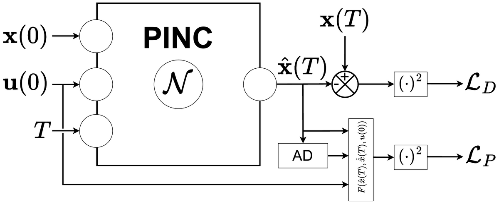
PINS — Physics-Informed Neural Networks with Control
Data-efficient modelling of underwater vehicle dynamics using physics-informed neural networks that embed the rigid-body equations of motion directly into the loss. The learned model is used inside a model predictive controller for trajectory tracking.

VTNMPC — Visual Tracking NMPC
A visual-servo based nonlinear model predictive control method for autonomous wind turbine inspection with a quadrotor. The controller keeps the blade centred in the camera frame while respecting input and safety constraints.
UNav-Sim
A visually realistic underwater robotics simulator built on Unreal Engine, designed for autonomous navigation, control, and synthetic data generation. Open-sourced and used as a benchmark by other underwater robotics groups.
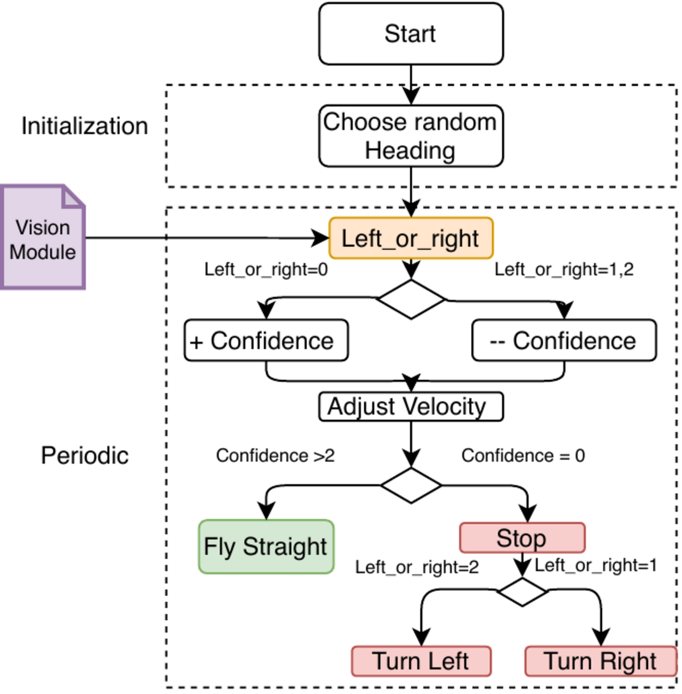
Optical-Flow Obstacle Avoidance for Micro Air Vehicles
Vision-based obstacle avoidance for the DelFly Explorer flapping-wing MAV using sparse optical flow. The navigation module reacts to oncoming obstacles in real time on a constrained on-board processor.
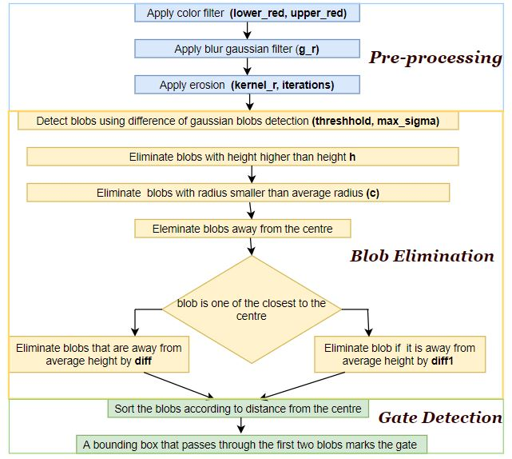
Drone Race Gate Detection
Real-time gate detection for autonomous drone racing using a lightweight computer vision pipeline, benchmarked with ROC analysis against ORB-SLAM-style feature detectors.
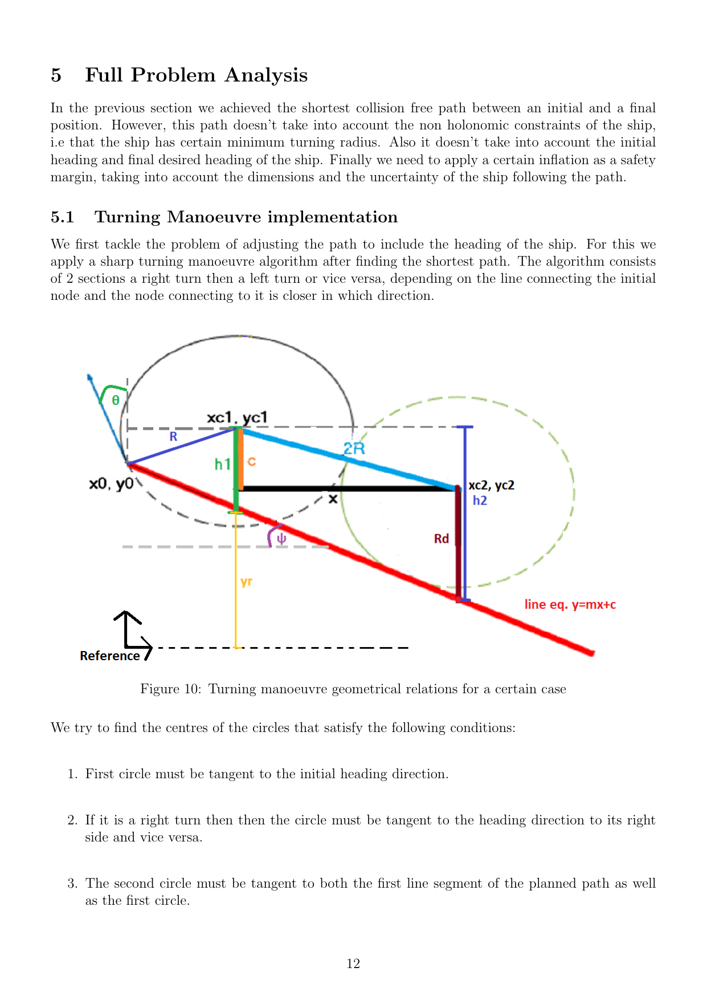
Path Planning for Autonomous Vessels
Global path planning for autonomous surface vessels combining roadmap and sampling-based methods (Voronoi, Visibility Graph, Dijkstra) with smooth turning manoeuvres. Done as a graduate intern at Royal IHC.
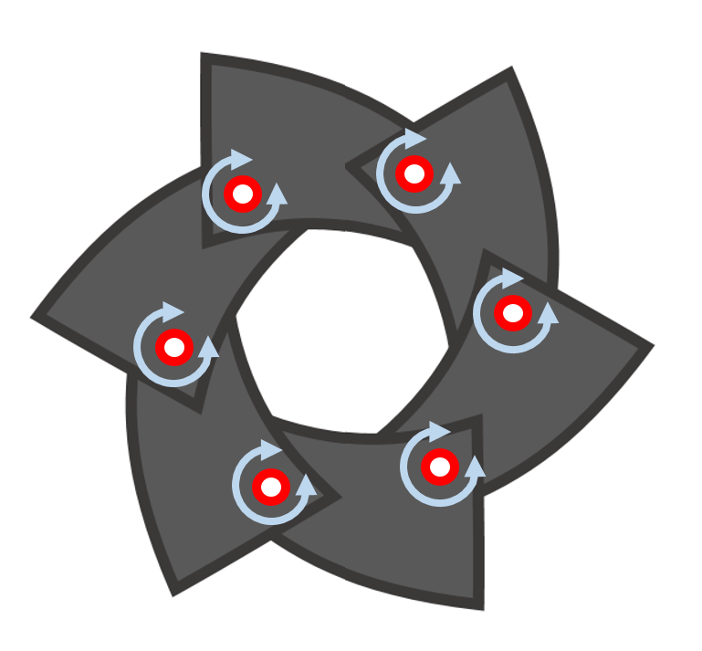
Precision Mechanism Design
Bio-inspired precision mechanism for an improved serving tray that attaches and detaches glassware on demand. Includes nature-driven concept generation (ACCREx method), variable-aperture mechanism design, prototyping and gripping-strength experiments on different glass geometries.
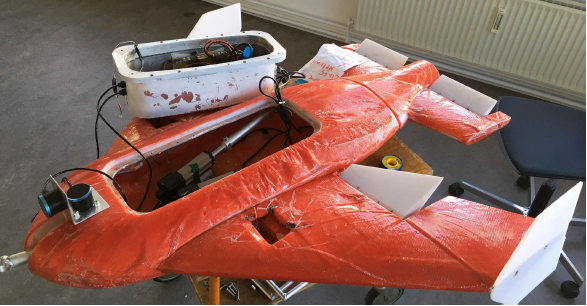
Towed ROV — Student Supervision
Supervised the design and gain-scheduled LQR controller development for a remotely operated towed vehicle, in collaboration with EIVA A/S. Outcome contributed to the SeaVis paper.
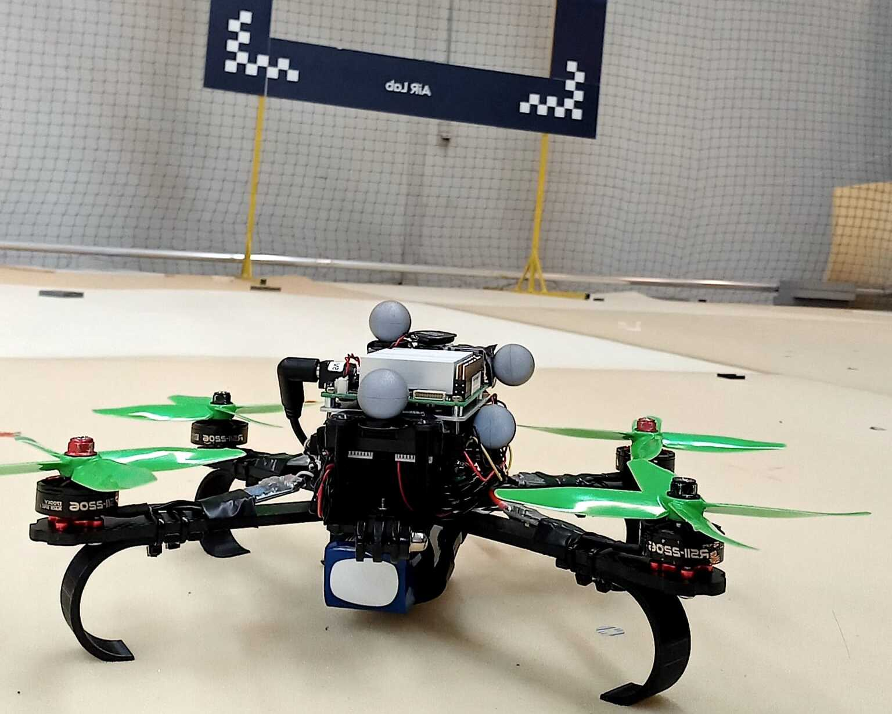
Mini Autonomous Inspection Drone — Student Supervision
Supervised the mechanical design, build and autonomy stack of a mini quadrotor for indoor inspection tasks, including PX4 integration and onboard perception.
PUBLICATIONS
CONTACT ME
Aarhus Universitet, Bygning 5125 (Edison), Finlandsgade 22, 8200 Aarhus
abdelhakim@ece.au.dk